运行态主链已使用 12-16 cm 钢筋间距先验：当前 rectified 等价 [24.0, 32.0] px；每轴全场目标 [15, 18] 根。小视野放不下全场线数时会切到 visible_local。
| 入口 | 算法 | 点数 | 线数 | 均值响应 |
|---|---|---|---|---|
| 运行态主链 | surface_dp_curve | 256 | [16, 16] | 0.971 |
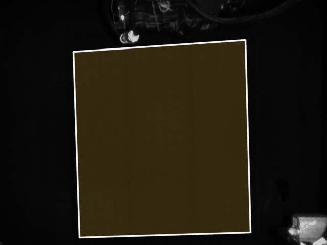
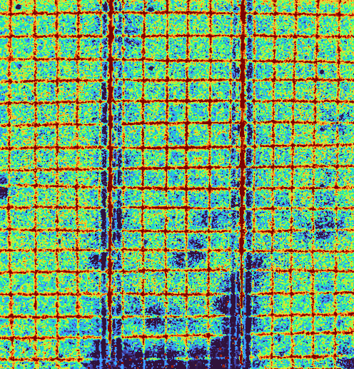
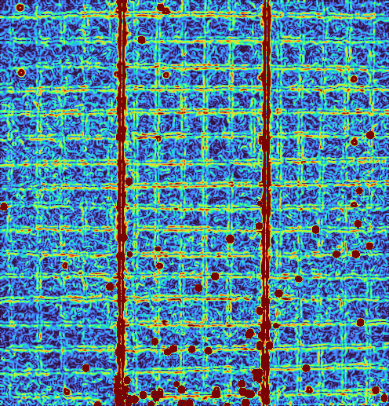
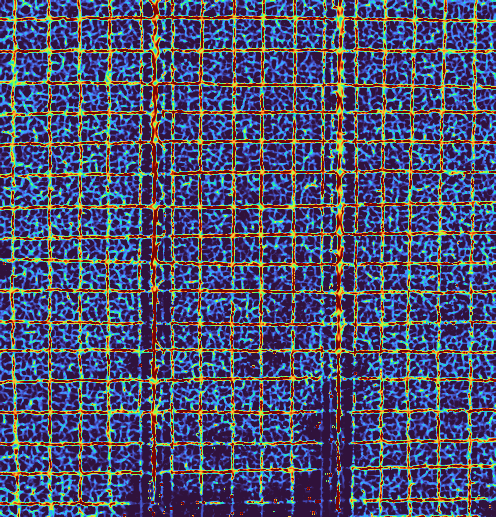
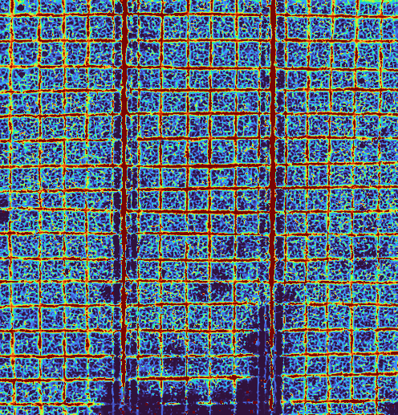
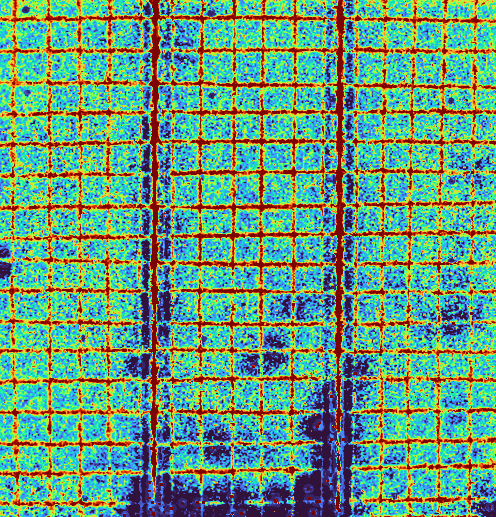
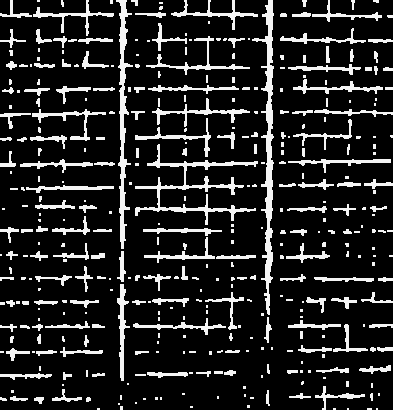
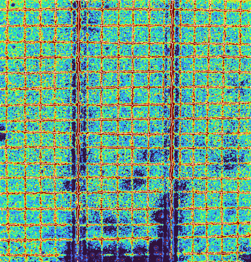
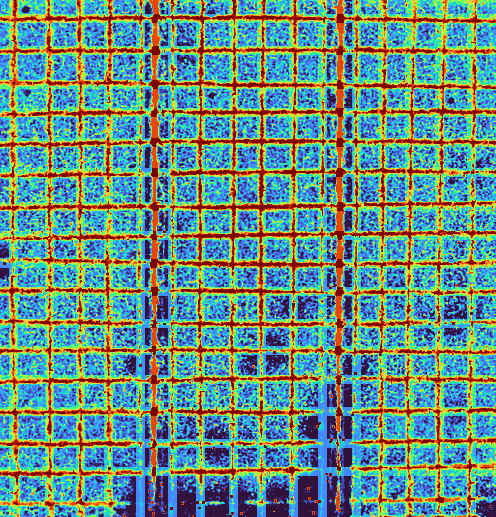
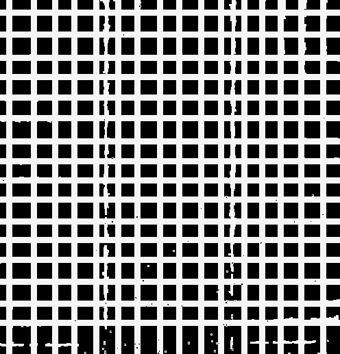
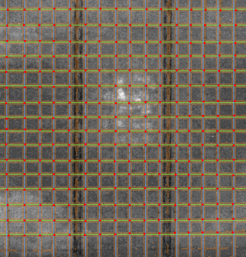
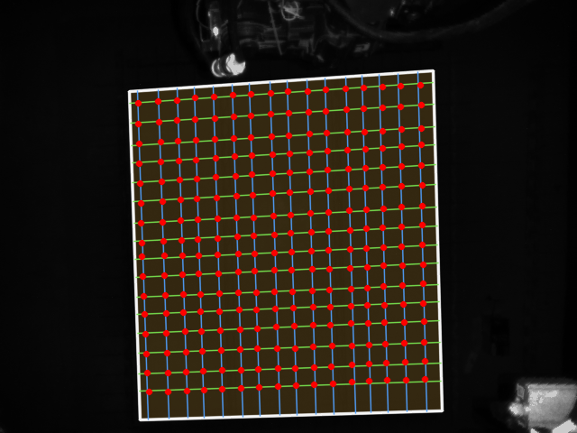